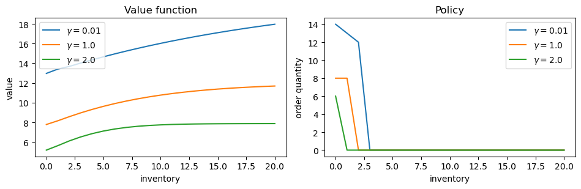
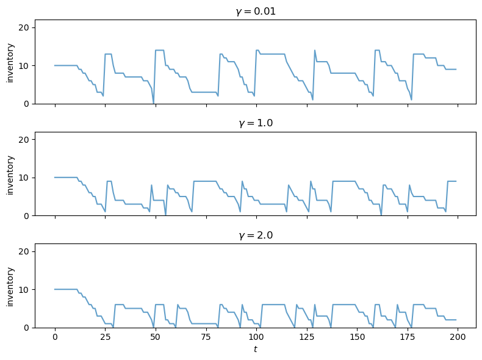
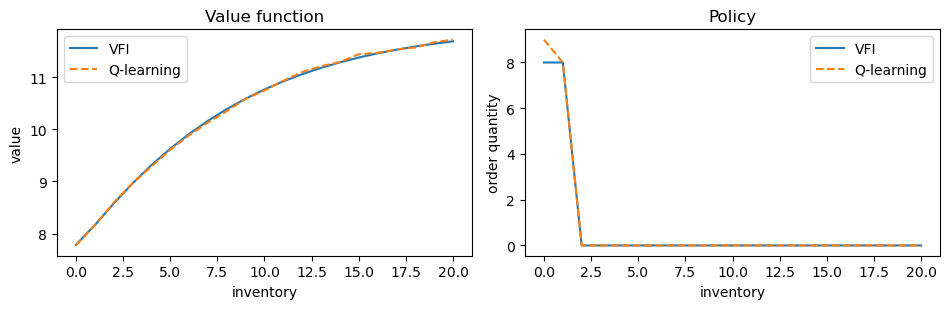
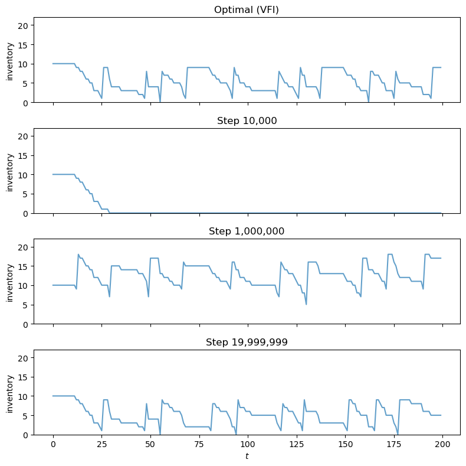

53. Risk-Sensitive Inventory Management via Q-Learning#
53.1. Introduction#
In Inventory Management via Q-Learning, we looked at an inventory management problem and solved it with both value function iteration and Q-learning.
In this lecture, we consider a risk-sensitive variation.
Injection of risk-sensitivity acknowledges the fact that, in incomplete markets with financial and informational frictions, firms typically take risk into account in their decision making.
In other words, the actions of firms are not, in general, risk neutral.
One natural way to handle this is to use a risk-sensitive version of the Bellman equation.
We show how the model can be solved using value function iteration.
We then investigate how risk sensitivity affects the optimal policy.
import numpy as np
import numba
import matplotlib.pyplot as plt
from typing import NamedTuple
53.2. The Model#
The Bellman equation for the inventory management problem in Inventory Management via Q-Learning has the form
Here \(D\) is a random variable with distribution \(\phi\).
(Primitives and definitions are the same as in Inventory Management via Q-Learning.)
The risk-sensitive version of this Bellman equation has the form
where \(\psi(t) = \exp(-\gamma t)\) for fixed \(\gamma > 0\).
Since \(\psi^{-1}(y) = -\frac{1}{\gamma} \ln(y)\), the Bellman equation becomes
Here \(\phi(d)\) denotes the demand probability mass function, as in Inventory Management via Q-Learning.
The parameter \(\gamma\) controls the degree of risk sensitivity.
As \(\gamma \to 0\), the certainty equivalent reduces to the ordinary expectation and we recover the risk-neutral case.
Larger \(\gamma\) means more aversion to downside risk.
The Bellman operator, greedy policy, and VFI algorithm all carry over from the risk-neutral case, with the expectation replaced by the certainty equivalent.
53.3. Solving via Value Function Iteration#
53.3.1. Model specification#
We reuse the same model primitives as in Inventory Management via Q-Learning, adding \(\gamma\) as a parameter.
class RSModel(NamedTuple):
x_values: np.ndarray # Inventory values
d_values: np.ndarray # Demand values for summation
ϕ_values: np.ndarray # Demand probabilities
p: float # Demand parameter
c: float # Unit cost
κ: float # Fixed cost
β: float # Discount factor
γ: float # Risk-sensitivity parameter
def create_rs_inventory_model(
K: int = 20, # Max inventory
D_MAX: int = 21, # Demand upper bound for summation
p: float = 0.7,
c: float = 0.2,
κ: float = 0.8,
β: float = 0.98,
γ: float = 1.0
) -> RSModel:
def demand_pdf(p, d):
return (1 - p)**d * p
d_values = np.arange(D_MAX)
ϕ_values = demand_pdf(p, d_values)
x_values = np.arange(K + 1)
return RSModel(x_values, d_values, ϕ_values, p, c, κ, β, γ)
53.3.2. The Bellman operator#
The risk-sensitive Bellman operator replaces the expected value with the certainty equivalent.
For numerical stability, we use the log-sum-exp trick: given values \(z_i = \pi(x, a, d_i) + \beta \, v(h(x, a, d_i))\), we compute
where \(m = \max_i (-\gamma z_i)\).
@numba.jit(nopython=True)
def T_rs_kernel(v, d_values, ϕ_values, c, κ, β, γ, K):
new_v = np.empty(K + 1)
n_d = len(d_values)
for x in range(K + 1):
best = -np.inf
for a in range(K - x + 1):
# Compute -γ * z_i for each demand realization
exponents = np.empty(n_d)
for i in range(n_d):
d = d_values[i]
x_next = max(x - d, 0) + a
revenue = min(x, d)
cost = c * a + κ * (a > 0)
z_i = revenue - cost + β * v[x_next]
exponents[i] = -γ * z_i
# Log-sum-exp trick for numerical stability
m = np.max(exponents)
weighted_sum = 0.0
for i in range(n_d):
weighted_sum += ϕ_values[i] * np.exp(exponents[i] - m)
val = -(1.0 / γ) * (m + np.log(weighted_sum))
if val > best:
best = val
new_v[x] = best
return new_v
def T_rs(v, model):
"""The risk-sensitive Bellman operator."""
x_values, d_values, ϕ_values, p, c, κ, β, γ = model
K = len(x_values) - 1
return T_rs_kernel(v, d_values, ϕ_values, c, κ, β, γ, K)
53.3.3. Computing the greedy policy#
The greedy policy records the maximizing action instead of the maximized value.
@numba.jit(nopython=True)
def get_greedy_rs_kernel(v, d_values, ϕ_values, c, κ, β, γ, K):
σ = np.empty(K + 1, dtype=np.int32)
n_d = len(d_values)
for x in range(K + 1):
best = -np.inf
best_a = 0
for a in range(K - x + 1):
exponents = np.empty(n_d)
for i in range(n_d):
d = d_values[i]
x_next = max(x - d, 0) + a
revenue = min(x, d)
cost = c * a + κ * (a > 0)
z_i = revenue - cost + β * v[x_next]
exponents[i] = -γ * z_i
m = np.max(exponents)
weighted_sum = 0.0
for i in range(n_d):
weighted_sum += ϕ_values[i] * np.exp(exponents[i] - m)
val = -(1.0 / γ) * (m + np.log(weighted_sum))
if val > best:
best = val
best_a = a
σ[x] = best_a
return σ
def get_greedy_rs(v, model):
"""Get a v-greedy policy for the risk-sensitive model."""
x_values, d_values, ϕ_values, p, c, κ, β, γ = model
K = len(x_values) - 1
return get_greedy_rs_kernel(v, d_values, ϕ_values, c, κ, β, γ, K)
53.3.4. Value function iteration#
def solve_rs_inventory_model(v_init, model, max_iter=10_000, tol=1e-6):
v = v_init.copy()
i, error = 0, tol + 1
while i < max_iter and error > tol:
new_v = T_rs(v, model)
error = np.max(np.abs(new_v - v))
i += 1
v = new_v
print(f"Converged in {i} iterations with error {error:.2e}")
σ = get_greedy_rs(v, model)
return v, σ
53.3.5. Creating and solving an instance#
model = create_rs_inventory_model()
x_values = model.x_values
n_x = len(x_values)
v_init = np.zeros(n_x)
v_star, σ_star = solve_rs_inventory_model(v_init, model)
Converged in 600 iterations with error 9.92e-07
53.3.6. Effect of risk sensitivity on the optimal policy#
We solve the model for several values of \(\gamma\) and compare the resulting policies.
As we will see, a risk-sensitive firm orders less aggressively than a risk-neutral one.
γ_values = [0.01, 1.0, 2.0]
results = {}
for γ in γ_values:
mod = create_rs_inventory_model(γ=γ)
v, σ = solve_rs_inventory_model(np.zeros(n_x), mod)
results[γ] = (v, σ)
Converged in 623 iterations with error 9.90e-07
Converged in 600 iterations with error 9.92e-07
Converged in 583 iterations with error 9.96e-07
fig, axes = plt.subplots(1, 2, figsize=(9.6, 3.2))
for γ in γ_values:
v, σ = results[γ]
axes[0].plot(x_values, v, label=f"$\\gamma = {γ}$")
axes[1].plot(x_values, σ, label=f"$\\gamma = {γ}$")
axes[0].set_xlabel("inventory")
axes[0].set_ylabel("value")
axes[0].legend()
axes[0].set_title("Value function")
axes[1].set_xlabel("inventory")
axes[1].set_ylabel("order quantity")
axes[1].legend()
axes[1].set_title("Policy")
plt.tight_layout()
plt.show()

53.3.7. Simulating the optimal policy#
We simulate inventory dynamics under the optimal policy for the baseline \(\gamma\).
@numba.jit(nopython=True)
def sim_inventories(ts_length, σ, p, X_init=0, seed=0):
"""Simulate inventory dynamics under policy σ."""
np.random.seed(seed)
X = np.zeros(ts_length, dtype=np.int32)
X[0] = X_init
for t in range(ts_length - 1):
d = np.random.geometric(p) - 1
X[t+1] = max(X[t] - d, 0) + σ[X[t]]
return X
fig, axes = plt.subplots(len(γ_values), 1,
figsize=(8, 2.0 * len(γ_values)),
sharex=True)
ts_length = 200
sim_seed = 5678
K = len(x_values) - 1
for i, γ in enumerate(γ_values):
v, σ = results[γ]
X = sim_inventories(ts_length, σ, model.p, X_init=K // 2, seed=sim_seed)
axes[i].plot(X, alpha=0.7)
axes[i].set_ylabel("inventory")
axes[i].set_title(f"$\\gamma = {γ}$")
axes[i].set_ylim(0, K + 2)
axes[-1].set_xlabel(r"$t$")
plt.tight_layout()
plt.show()

53.4. Interpreting the Outcomes#
The plots above show that a more risk-sensitive firm (larger \(\gamma\)) orders less inventory and maintains lower stock levels.
At first glance this may seem surprising: wouldn’t holding more inventory reduce variance by ensuring the firm can always meet demand?
The key is to identify where the randomness in profits actually comes from.
Recall that per-period profit is \(\pi(x, a, d) = \min(x, d) - ca - \kappa \mathbf{1}\{a > 0\}\).
The ordering cost \(ca + \kappa \mathbf{1}\{a > 0\}\) is deterministic — it is chosen before the demand shock is realized.
So higher ordering shifts the level of profits down but does not affect their variance.
The variance comes from revenue: \(\min(x, D)\).
When inventory \(x\) is high, \(\min(x, D) \approx D\) for most demand realizations — revenue inherits the full variance of demand.
When inventory \(x\) is low, \(\min(x, D) \approx x\) for most realizations — revenue is nearly deterministic, capped at the inventory level.
A risk-sensitive agent therefore prefers lower inventory because it caps the randomness of revenue.
The agent accepts lower expected sales in exchange for more predictable profits.
There is also a continuation value channel: next-period inventory \(\max(x - D, 0) + a\) varies with \(D\), and higher \(x\) means \(x - D\) tracks \(D\) more closely, propagating that variance forward through \(v\).
53.5. Q-Learning#
We now ask whether the optimal policy can be learned without knowledge of the model, as we did in the risk-neutral case in Inventory Management via Q-Learning.
53.5.1. The Q-factor#
The first step is to define the Q-factor in a way that is compatible with the risk-sensitive Bellman equation.
We define
In words, \(q(x, a)\) applies the risk-sensitivity transformation \(\psi(t) = \exp(-\gamma t)\) inside the expectation, evaluated at the return from taking action \(a\) in state \(x\) and following the optimal policy thereafter.
53.5.2. Deriving the Q-factor Bellman equation#
Our goal is to obtain a fixed point equation in \(q\) alone, eliminating \(v^*\).
Step 1. Express \(v^*\) in terms of \(q\).
The risk-sensitive Bellman equation says \(v^*(x) = \max_{a \in \Gamma(x)} \psi^{-1}(q(x, a))\).
Since \(\psi^{-1}(y) = -\frac{1}{\gamma} \ln(y)\) is a decreasing function, the maximum over \(a\) of \(\psi^{-1}(q(x, a))\) corresponds to the minimum over \(a\) of \(q(x, a)\):
Equivalently,
Step 2. Substitute back into the definition of \(q\) to eliminate \(v^*\).
Expanding the exponential in the definition of \(q\),
where \(x' = h(x, a, D)\).
From Step 1, \(\exp(-\gamma \, v^*(x')) = \min_{a' \in \Gamma(x')} q(x', a')\), so \(\exp(-\gamma \beta \, v^*(x')) = \left[\min_{a' \in \Gamma(x')} q(x', a')\right]^\beta\).
Substituting,
This is a fixed point equation in \(q\) alone — \(v^*\) has been eliminated.
53.5.3. The Q-learning update rule#
As in the risk-neutral case, we approximate the fixed point using stochastic approximation.
At each step, the agent is in state \(x\), takes action \(a\), observes profit \(R_{t+1} = \pi(x, a, D_{t+1})\) and next state \(X_{t+1} = h(x, a, D_{t+1})\), and updates
The term in brackets is a single-sample estimate of the right-hand side of the Q-factor Bellman equation.
The update blends the current estimate with this fresh sample, just as in standard Q-learning.
Notice several differences from the risk-neutral case:
The Q-values are positive (expectations of exponentials) rather than signed.
The optimal policy is \(\sigma(x) = \argmin_a q(x, a)\) — we minimize rather than maximize, because \(\psi^{-1}\) is decreasing.
The observed profit enters through \(\exp(-\gamma R_{t+1})\) rather than additively.
The continuation value enters as a power \((\min_{a'} q_t)^\beta\) rather than a scaled sum \(\beta \cdot \max_{a'} q_t\).
As before, the agent needs only to observe \(x\), \(a\), \(R_{t+1}\), and \(X_{t+1}\) — no model knowledge is required.
53.5.4. Implementation plan#
Our implementation follows the same structure as the risk-neutral Q-learning in Inventory Management via Q-Learning, with the modifications above:
Initialize the Q-table \(q\) to ones (since Q-values are positive) and visit counts \(n\) to zeros.
At each step:
Draw demand \(D_{t+1}\) and compute observed profit \(R_{t+1}\) and next state \(X_{t+1}\).
Compute \(\min_{a'} q_t(X_{t+1}, a')\) over feasible actions (this is a scalar for the update target, and the \(\argmin\) action is used by the \(\varepsilon\)-greedy behavior policy).
Update \(q_t(x, a)\) using the rule above, with learning rate \(\alpha_t = 1 / n_t(x, a)^{0.51}\).
Choose the next action via \(\varepsilon\)-greedy: with probability \(\varepsilon\) pick a random feasible action, otherwise pick the \(\argmin\) action.
Decay \(\varepsilon\).
Extract the greedy policy from the final Q-table via \(\sigma(x) = \argmin_{a \in \Gamma(x)} q(x, a)\).
Compare the learned policy against the VFI solution.
53.5.5. Implementation#
We first define a helper to extract the greedy policy from the Q-table.
Since the optimal policy minimizes \(q\), we use \(\argmin\) rather than \(\argmax\).
@numba.jit(nopython=True)
def greedy_policy_from_q_rs(q, K):
"""Extract greedy policy from risk-sensitive Q-table (argmin)."""
σ = np.empty(K + 1, dtype=np.int32)
for x in range(K + 1):
best_val = np.inf
best_a = 0
for a in range(K - x + 1):
if q[x, a] < best_val:
best_val = q[x, a]
best_a = a
σ[x] = best_a
return σ
The Q-learning loop mirrors the risk-neutral version, with the key changes: Q-table initialized to ones, the update target uses \(\exp(-\gamma R_{t+1}) \cdot (\min_{a'} q_t)^\beta\), and the behavior policy follows the \(\argmin\).
@numba.jit(nopython=True)
def q_learning_rs_kernel(K, p, c, κ, β, γ, n_steps, X_init,
ε_init, ε_min, ε_decay, snapshot_steps, seed):
np.random.seed(seed)
q = np.ones((K + 1, K + 1)) # positive Q-values, initialized to 1
n = np.zeros((K + 1, K + 1)) # visit counts for learning rate
ε = ε_init
n_snaps = len(snapshot_steps)
snapshots = np.zeros((n_snaps, K + 1), dtype=np.int32)
snap_idx = 0
# Initialize state and action
x = X_init
a = np.random.randint(0, K - x + 1)
for t in range(n_steps):
# Record policy snapshot if needed
if snap_idx < n_snaps and t == snapshot_steps[snap_idx]:
snapshots[snap_idx] = greedy_policy_from_q_rs(q, K)
snap_idx += 1
# === Draw D_{t+1} and observe outcome ===
d = np.random.geometric(p) - 1
reward = min(x, d) - c * a - κ * (a > 0)
x_next = max(x - d, 0) + a
# === Min over next state (scalar value for update target) ===
# Also record the argmin action for use by the behavior policy.
best_next = np.inf
a_next = 0
for aa in range(K - x_next + 1):
if q[x_next, aa] < best_next:
best_next = q[x_next, aa]
a_next = aa
# === Risk-sensitive Q-learning update ===
target = np.exp(-γ * reward) * best_next ** β
n[x, a] += 1
α = 1.0 / n[x, a] ** 0.51
q[x, a] = (1 - α) * q[x, a] + α * target
# === Behavior policy: ε-greedy (uses a_next, the argmin action) ===
x = x_next
if np.random.random() < ε:
a = np.random.randint(0, K - x + 1)
else:
a = a_next
ε = max(ε_min, ε * ε_decay)
return q, snapshots
The wrapper function unpacks the model and provides default hyperparameters.
def q_learning_rs(model, n_steps=20_000_000, X_init=0,
ε_init=1.0, ε_min=0.01, ε_decay=0.999999,
snapshot_steps=None, seed=1234):
x_values, d_values, ϕ_values, p, c, κ, β, γ = model
K = len(x_values) - 1
if snapshot_steps is None:
snapshot_steps = np.array([], dtype=np.int64)
return q_learning_rs_kernel(K, p, c, κ, β, γ, n_steps, X_init,
ε_init, ε_min, ε_decay, snapshot_steps, seed)
53.5.6. Running Q-learning#
We run 20 million steps and take policy snapshots at steps 10,000, 1,000,000, and at the end.
snap_steps = np.array([10_000, 1_000_000, 19_999_999], dtype=np.int64)
q_table, snapshots = q_learning_rs(model, snapshot_steps=snap_steps)
53.5.7. Comparing with the exact solution#
We extract the value function and policy from the final Q-table.
Since Q-values represent \(\mathbb{E}[\exp(-\gamma(\cdots))]\), we recover the value function via \(v_Q(x) = -\frac{1}{\gamma} \ln(\min_{a} q(x, a))\) and the policy via \(\sigma_Q(x) = \argmin_a q(x, a)\).
K = len(x_values) - 1
γ_base = model.γ
# restrict to feasible actions a ∈ {0, ..., K-x}
v_q = np.array([-(1/γ_base) * np.log(np.min(q_table[x, :K - x + 1]))
for x in range(K + 1)])
σ_q = np.array([np.argmin(q_table[x, :K - x + 1])
for x in range(K + 1)])
fig, axes = plt.subplots(1, 2, figsize=(9.6, 3.2))
axes[0].plot(x_values, v_star, label="VFI")
axes[0].plot(x_values, v_q, '--', label="Q-learning")
axes[0].set_xlabel("inventory")
axes[0].set_ylabel("value")
axes[0].legend()
axes[0].set_title("Value function")
axes[1].plot(x_values, σ_star, label="VFI")
axes[1].plot(x_values, σ_q, '--', label="Q-learning")
axes[1].set_xlabel("inventory")
axes[1].set_ylabel("order quantity")
axes[1].legend()
axes[1].set_title("Policy")
plt.tight_layout()
plt.show()

53.5.8. Visualizing learning over time#
The panels below show how the agent’s policy evolves during training.
Each panel simulates an inventory path using the greedy policy extracted from the Q-table at a given training step, with the same demand sequence throughout.
The top panel shows the optimal policy from VFI for reference.
ts_length = 200
n_snaps = len(snap_steps)
fig, axes = plt.subplots(n_snaps + 1, 1, figsize=(8, 2.0 * (n_snaps + 1)),
sharex=True)
X_init = K // 2
sim_seed = 5678
# Optimal policy
X_opt = sim_inventories(ts_length, σ_star, model.p, X_init, seed=sim_seed)
axes[0].plot(X_opt, alpha=0.7)
axes[0].set_ylabel("inventory")
axes[0].set_title("Optimal (VFI)")
axes[0].set_ylim(0, K + 2)
# Q-learning snapshots
for i in range(n_snaps):
σ_snap = snapshots[i]
X = sim_inventories(ts_length, σ_snap, model.p, X_init, seed=sim_seed)
axes[i + 1].plot(X, alpha=0.7)
axes[i + 1].set_ylabel("inventory")
axes[i + 1].set_title(f"Step {snap_steps[i]:,}")
axes[i + 1].set_ylim(0, K + 2)
axes[-1].set_xlabel(r"$t$")
plt.tight_layout()
plt.show()

After 10,000 steps, the agent has barely explored and its policy is erratic.
By 1,000,000 steps the learned policy begins to resemble the optimal one, and by step 20 million the inventory dynamics are nearly indistinguishable from the VFI solution.
Note that the converged policy maintains lower inventory levels than in the risk-neutral case (compare with Inventory Management via Q-Learning), consistent with the mechanism discussed above: a risk-sensitive agent caps its exposure to demand variance by holding less stock.
53.6. Conclusion#
We extended the inventory management problem from Inventory Management via Q-Learning to incorporate risk sensitivity via the certainty equivalent operator \(\psi^{-1}(\mathbb{E}[\psi(\cdot)])\) with \(\psi(t) = \exp(-\gamma t)\).
Value function iteration confirms that risk-sensitive firms order less aggressively, preferring predictable profits over higher but more volatile returns.
We then showed that Q-learning can be adapted to the risk-sensitive setting by working with the transformed Q-factor \(q(x,a) = \mathbb{E}[\exp(-\gamma(\pi + \beta v^*))]\).
The resulting update rule replaces addition with multiplication and max with min, but retains the key property of model-free learning: the agent needs only to observe states, actions, and profits.